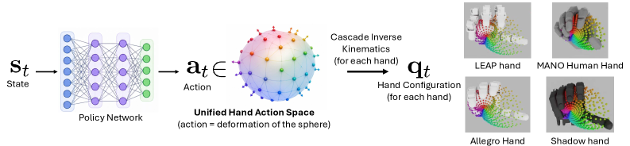
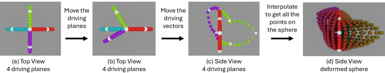

서로 다른 로봇 손(embodiment)의 조작 정책을 공유하기 위해, 손 동작을 정준 구(canonical sphere)의 기하학적 변형으로 표현하는 Unified Hand Action Space(UHAS)를 제안. Cascade Inverse Kinematics(CIK, ~150Hz)로 이 공유 표현을 각 손의 관절 구성으로 매핑한다. 인-핸드 큐브 재배향 과제에서 Allegro·LEAP·Shadow·MANO 4종 손 시뮬레이션 성공률 99%+, 미학습 손 zero-shot 전이는 최대 98.1%(MANo), 500 iter 파인튜닝만으로 Shadow zero-shot 85.7%→95.8% 향상. LEAP 실로봇에서도 관절제어 베이스라인(0.6회) 대비 UHAS-LEAP 학습이 평균 2.0회 연속 재배향.
다지(multi-fingered) 로봇 손은 손마다 관절 수·형상·자유도가 크게 달라, 한 손에서 학습한 조작 정책을 다른 손으로 옮기기 어렵다. 기존의 embodiment별 관절 명령(joint control) 공간은 손마다 차원과 의미가 달라 정책 재사용·교차 전이가 사실상 불가능하다. 저자들은 손 동작을 특정 하드웨어에 얽매이지 않는 추상적·기하학적 표현으로 표준화하면, 여러 손이 하나의 정책을 공유하고 미학습 손으로도 zero-shot/빠른 적응이 가능해진다는 문제의식에서 출발한다.
각 손의 동작을 정준 구의 변형으로 표현한다. 구는 손 URDF로부터 자동 생성되며 반지름은 r = 2l/π(l = 손바닥 중심에서 지문까지 평균 거리)로 설정된다. 손가락마다 하나의 driving plane을 두고, 각 plane에 2개의 driving vector를 배치하여 (Δθ, Δr) 형태의 변형으로 행동을 기술 → 총 15차원 행동 공간.
구 변형 → 관절 구성 매핑을 담당. 관절을 두 부류로 분류한다: lateral 관절은 방위각 θ(azimuthal)를, encompassing 관절은 반지름 r과 극각 φ(polar)를 제어. 이 분류에 기반해 단계적(cascade)으로 IK를 풀어 손별 관절 명령을 산출하며, 실행 속도는 약 150Hz.
UHAS 공간에서 직접 RL로 인-핸드 큐브 재배향 정책을 학습한다. 여러 손을 함께 학습하는 Multi-Hand 정책은 새 손에 대한 zero-shot 전이 및 소수 iteration 파인튜닝의 출발점이 된다.
| 손 | Single-Hand | Joint Control | Multi-Hand | Zero-shot |
|---|---|---|---|---|
| Allegro | 99.1 / 9.6 | 98.5 / 9.2 | 99.2 / 9.5 | 95.3 / 7.7 |
| LEAP | 99.7 / 9.8 | 98.6 / 9.3 | 99.1 / 9.5 | 95.5 / 7.7 |
| Shadow | 99.3 / 9.6 | 98.0 / 9.1 | 98.7 / 9.2 | 85.7 / 4.4 |
| MANO | 99.8 / 9.9 | 99.6 / 9.8 | 99.5 / 9.8 | 98.1 / 8.9 |
1000 병렬 환경 평가. UHAS Single/Multi-Hand는 embodiment별 Joint Control과 대등하거나 그 이상이며, 미학습 손 zero-shot도 대부분 95%+ 유지(Shadow는 85.7%로 상대적으로 낮음).
MANO 기반 정책에서 미학습 손으로 500 iteration만 파인튜닝했을 때, Shadow의 zero-shot 성공률이 85.7% → 95.8%로 향상. 소수 반복만으로 신규 embodiment에 빠르게 적응함을 보임.
| 방식 | 평균 연속 재배향 |
|---|---|
| Baseline (Joint Control) | 0.6 |
| UHAS Zero-Shot | 0.9 |
| UHAS Multi-Hand | 1.1 |
| UHAS LEAP-Trained | 2.0 |
실물 LEAP Hand에서 UHAS 정책이 관절제어 베이스라인(0.6회)을 상회. LEAP 전용 학습 시 평균 2.0회로 최고, zero-shot·multi-hand도 베이스라인 대비 우위.
4지 손과 5지 손 사이 전이를 평가. in-distribution 조건에서는 99%+ 성공을 유지하며, 이종 형태 간 전이는 유의미하나 성능이 다소 저하됨을 보고.
| Driving Vector 수 | 성공률 % | 평균 연속 재배향 | 비고 |
|---|---|---|---|
| 1 | 98.0 | 8.8 | — |
| 2 | 98.7 | 9.3 | 최단 학습 시간 |
| 3 | 99.5 | 9.6 | 최고 성능 |
| 4 | 98.1 | 9.1 | — |
Vector 수가 늘수록 표현력이 커지나 3개에서 성능이 정점을 찍고 4개에서는 오히려 하락. 2개는 성능·학습효율 균형점(최단 학습 시간).


그 밖에 구 변형·CIK 관절 분류(lateral/encompassing) 구조 도해, Table 2(교차 형태 일반화), Table 3(빠른 적응), Table 4(driving vector ablation)가 주요 근거.
아직 추가 질문이 없습니다. 이 논문에 대해 더 궁금한 점을 물어보시면 답변을 여기에 정리해 추가합니다.